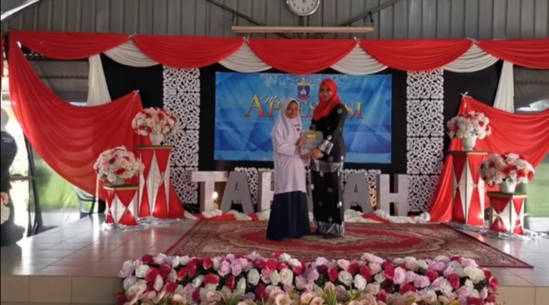
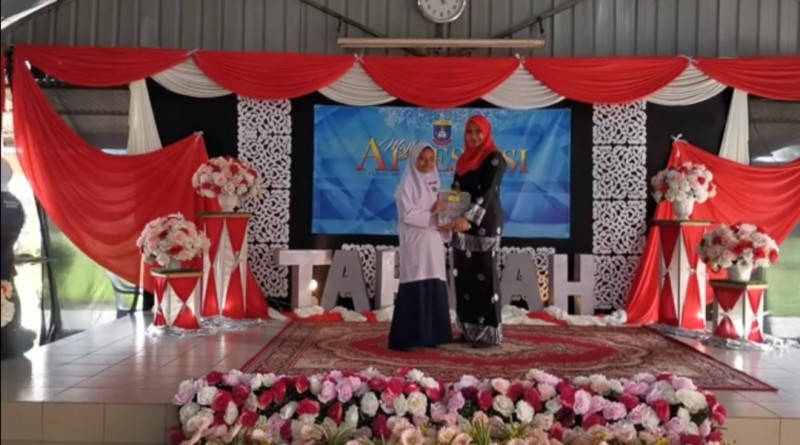
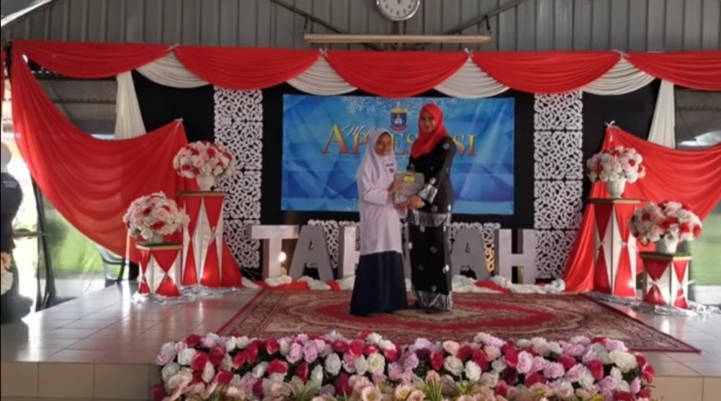
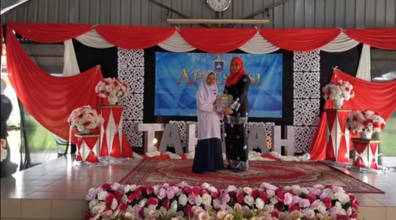

Gallery 📸
Eid al-Adha 2021


Annual Sports 2020

Excellence Award 2021
 

Eid al-Adha 2021
Annual Sports 2020
Excellence Award 2021


MAYBANK ISLAMIC BERHAD
5582 2060 1061
PERTUBUHAN KEBAJIKAN KASIH NURUL IMAN NEGERI PERAK
The Benevolent Organization of Nurul Iman Negeri Perak (Rumah Nurul Iman) towards a Virtue Organization that is responsible and trustworthy in doing good works for orphans and poor children without ignoring what is contained in the Childhood Act 2001 and the Central Act Guard 1993.
Nurul Iman's house has the principle of providing education to children who are not lucky enough to receive a proper defense.
Eid al-Adha 2021
Annual Sports 2020
Excellence Award 2021
